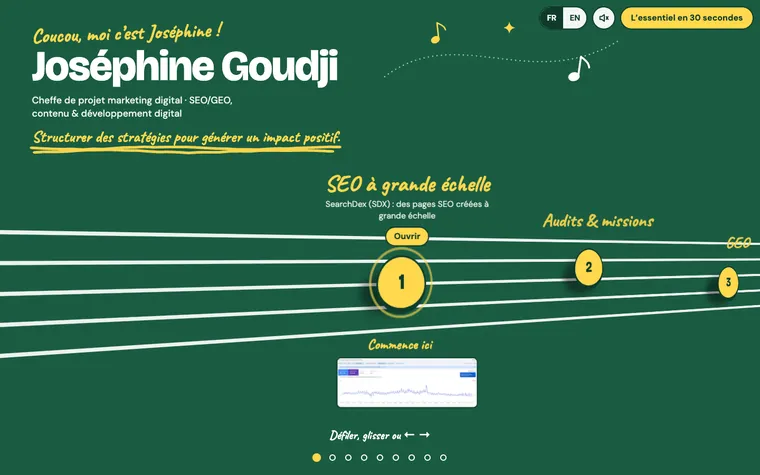
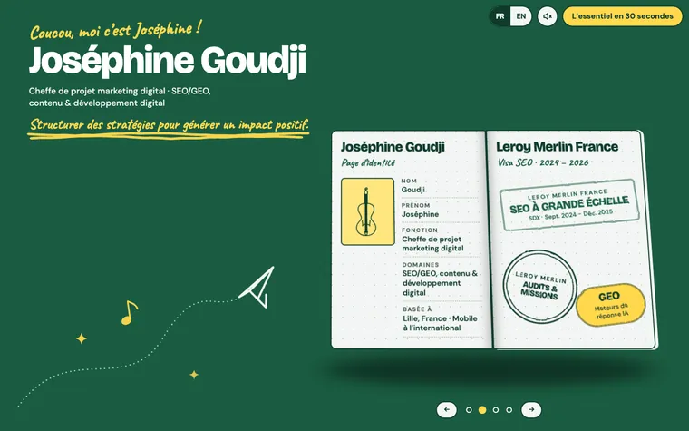

Version ALe bureau
Un bureau en papier à points incliné en 3D. Chaque objet est à toi : le portable avec ta capture, le violon (il joue deux notes), le carnet, le passeport, la lettre.
Joséphine, voici tes trois versions
Les trois contiennent exactement le même contenu (ton portfolio actuel, en français et en anglais) et la même preuve n° 1 : tes deux ans de SEO chez Leroy Merlin, avec ta vraie capture Google Search Console. Seule la mise en scène change. Chaque page pèse environ 120 Ko au premier affichage.
Un bureau en papier à points incliné en 3D. Chaque objet est à toi : le portable avec ta capture, le violon (il joue deux notes), le carnet, le passeport, la lettre.

Une portée qu’on parcourt à la molette, aux flèches ou en glissant : huit notes, une par preuve, et une coda pour te contacter. Chaque note joue sa hauteur (son activé par défaut).

Un livret en 3D qui s’ouvre et dont on tourne les pages. Les pages font un bruit de papier et chaque tampon s’imprime avec un « thump » en ouvrant une preuve. La page de route finit sur ton prochain cap.
Cette page sert seulement à choisir. Une fois ta version retenue, on la renomme en index.html et on supprime les deux autres.